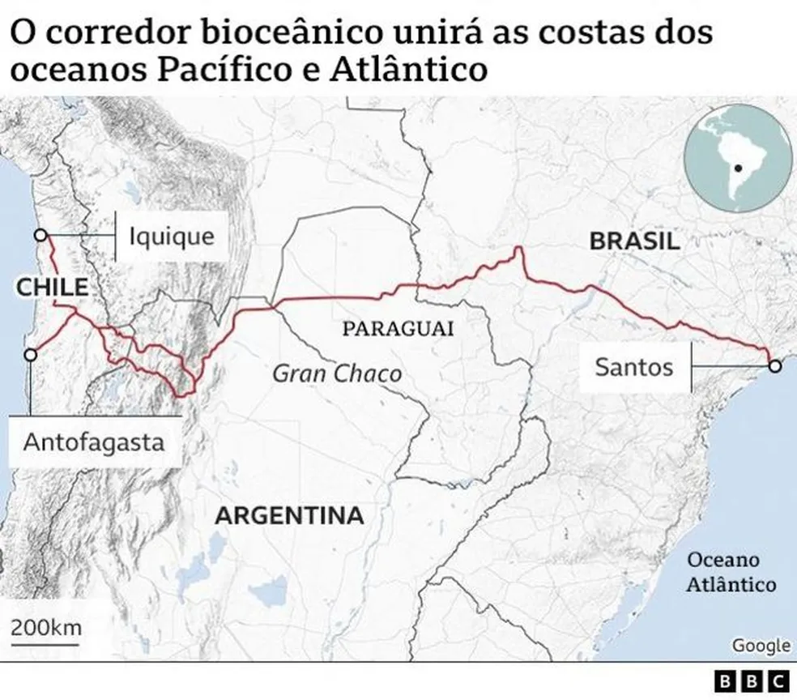

A megaestrada que ligará Brasil e Chile cruzando 'inferno verde' no Paraguai
Escrita por Jane Chambers e resumida pelo ChatGPT
Uma megaestrada de 4.500 km está sendo construída para unir o Brasil e o Chile, passando pela floresta amazônica no Paraguai. A rota, apelidada de "Inferno Verde", tem como objetivo melhorar a conectividade comercial e a integração regional entre os dois países sul-americanos. No entanto, a construção da estrada também levanta preocupações ambientais e sociais, dado que ela passa por áreas sensíveis e comunidades locais.
A construção da estrada é vista como uma oportunidade para fortalecer as relações comerciais entre o Brasil e o Chile, com o objetivo de ampliar o comércio e a cooperação regional. A "Inferno Verde" também pode gerar novas oportunidades de emprego e estimular o desenvolvimento econômico na região, especialmente em áreas mais remotas.
Apesar dos benefícios potenciais, a construção da megaestrada também gera preocupações quanto aos impactos ambientais e sociais. A rota passa pela floresta amazônica, uma das maiores e mais importantes florestas tropicais do mundo, e pode causar danos significativos ao ecossistema local. Além disso, a construção da estrada pode afetar as comunidades indígenas e outros grupos locais que dependem da floresta para sobrevivência e subsistência.
Fonte original: BBC Brasil